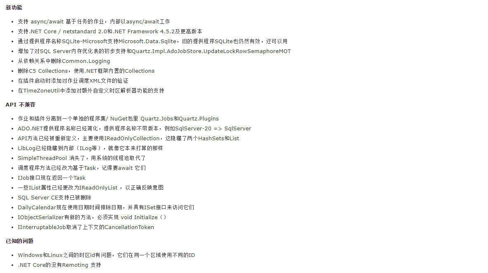

前言：
你曾经需要应用执行一个任务吗？比如现在有一个需求，需要每天在零点定时执行一些操作，那应该怎样操作呢？
这个时候，如果你和你的团队是用.NET编程的话，可以考虑使用Quartz.NET调度器。允许开发人员根据日期间隔来实现任务调度任务。非常适合在平时的工作中，定时轮询数据库同步，定时邮件通知，定时处理数据等。
Quartz一个开源的作业调度框架，是OpenSymphony 的 Quartz API的.NET移植每隔，基于C#写成，可应用于winform、asp.net、asp.net core应用中。提供了巨大的灵活性，是一个更为强大，方便管理，集群部署的作业调度框架。
所以，有时候项目需要在不同时刻，执行一个或很多个不同的作业，你可以用它来完成执行创建简单或复杂的任务调度。
导图：
特性：
1：支持集群，作业分组，作业远程管理。
2：自定义精细的时间触发器，使用简单，作业和触发分离。
3：数据库支持，可以寄宿Windows服务，WebSite，winform等。
概念：
Scheduler 作业调度器
所有的scheduler都应该由SchedulerFactory来创建
//创建scheduler
Scheduler scheduler = StdSchedulerFactory.getDefaultScheduler();IJob 作业接口，继承并实现Execute， 编写执行的具体作业逻辑。
通过实现IJob接口来使你的.NET组件可以很简单地被scheduler执行
public class ConsoleJob : IJob
{
public Task Execute(IJobExecutionContext context)
{
return Console.Out.WriteLineAsync($"执行作业");
}
}JobBuilder 根据设置，生成一个详细作业信息(JobDetail)。
JobBuilder是一个建造者模式，链式建造。通过静态方法构建一个JobBuilder实例，然后再调用类方法Build()创建一个IJobDetail的实现。
public static JobBuilder Create(Type jobType)
{
JobBuilder b = new JobBuilder();
b.OfType(jobType);
return b;
}TriggerBuilder 根据规则，生产对应的Trigger，触发器可以规划执行任务
通过静态方法构建一个TriggerBuilder实例，然后再调用类方法Build()创建一个ITrigger的实现。
public static TriggerBuilder Create()
{
return new TriggerBuilder();
}根据任务设置触发的开始时间和结束时间
/// <summary>
/// 开始时间
/// </summary>
/// <param name="startTimeUtc"></param>
/// <returns></returns>
public TriggerBuilder StartAt(DateTimeOffset startTimeUtc)
{
startTime = startTimeUtc;
return this;
}
/// <summary>
/// 结束时间
/// </summary>
/// <param name="endTimeUtc"></param>
/// <returns></returns>
public TriggerBuilder EndAt(DateTimeOffset? endTimeUtc)
{
endTime = endTimeUtc;
return this;
}步骤：
1、创建一个ISchedulerFactory，然后并且获取 Scheduler
2、启动 Scheduler
3、创建 job 任务
4、创建 trigger 触发器
5、使用触发器规划执行任务
开始：
注意：
新建一个Quartz项目后,需要安装下面的程序包:
你可以用控制台命令的方式安装
Install-Package Quartz也可以使用下面这种方式选择安装版本
一、创建一个scheduler的引用：
ISchedulerFactory schedFact = new StdSchedulerFactory();
IScheduler sched = await schedFact.GetScheduler();二、启动 scheduler：
await sched.Start();三、实现IJob:
ConsoleJob.cs 实现IJob，在Execute方法里编写要处理的业务逻辑，系统就会按照Quartz的配置，定时处理
/// <summary>
/// 实现IJob,Execute方法里编写要处理的业务逻辑
/// </summary>
public class ConsoleJob : IJob
{
public Task Execute(IJobExecutionContext context)
{
return Console.Out.WriteLineAsync($"ConsoleJob执行工作 在当前时间{DateTime.Now}--上一次执行时间：{DateTime.Now.AddSeconds(-5)}");
}
}四、创建trigger：（建立一个某个时间点的触发器，并且每5秒执行一次）
ITrigger trigger = TriggerBuilder.Create()
.WithIdentity("trigger1", "group1") //触发器 组
.WithSimpleSchedule(x => x.WithIntervalInSeconds(5).RepeatForever())
.Build();五、触发器执行任务：
await sched.ScheduleJob(job, trigger);将几个步骤整合后代码如下：
/// <summary>
/// 任务调度的使用过程
/// </summary>
/// <returns></returns>
public async static Task Run()
{
// 1.创建scheduler的引用
ISchedulerFactory schedFact = new StdSchedulerFactory();
IScheduler sched = await schedFact.GetScheduler();
//2.启动 scheduler
await sched.Start();
// 3.创建 job
IJobDetail job = JobBuilder.Create<ConsoleJob>()
.WithIdentity("job1", "group1")
.Build();
// 4.创建 trigger （创建 trigger 触发器）
ITrigger trigger = TriggerBuilder.Create()
.WithIdentity("trigger1", "group1") //触发器 组
.WithSimpleSchedule(x => x.WithIntervalInSeconds(5).RepeatForever())
.Build();
// 5.使用trigger规划执行任务job （使用触发器规划执行任务）
await sched.ScheduleJob(job, trigger);
}运行：
间隔5秒执行一次后的效果：
附加：
这里使用的quartz为3.x 版本，整个版本相对于2.0版本进行了大量的修改，正式支持了.NET Core 和async/await
引用张队文章的内容：

总结：
1.其实在实际项目中，可以将上面的方法进行封装处理，形成不同的任务，特别是处理多任务的时候，在不同的job中调用不同的trigger，后续会继续完善开发
2.quartz还有更多的用法，可以参考资料：Quartz.Net官方文档 和 Quartz.Net开源地址
3.项目源码地址